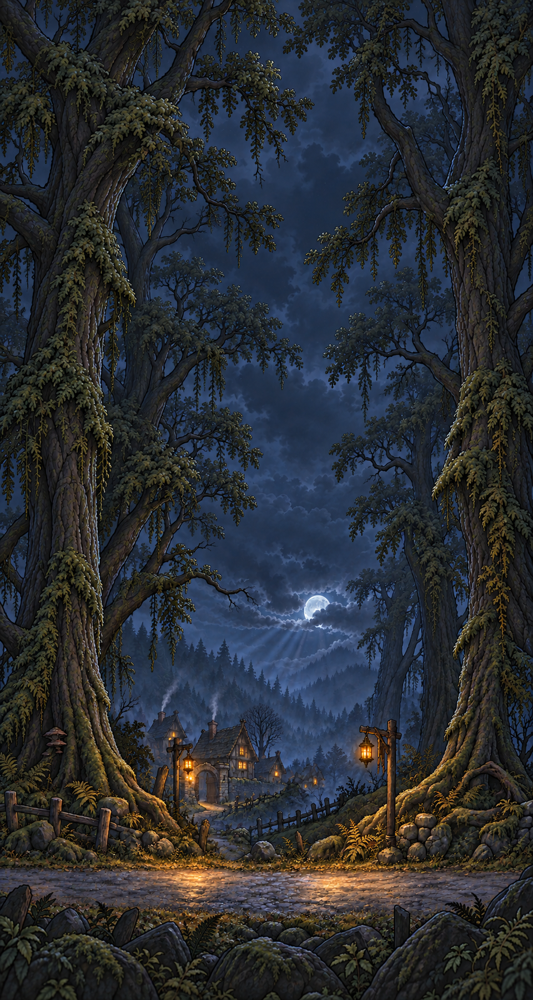
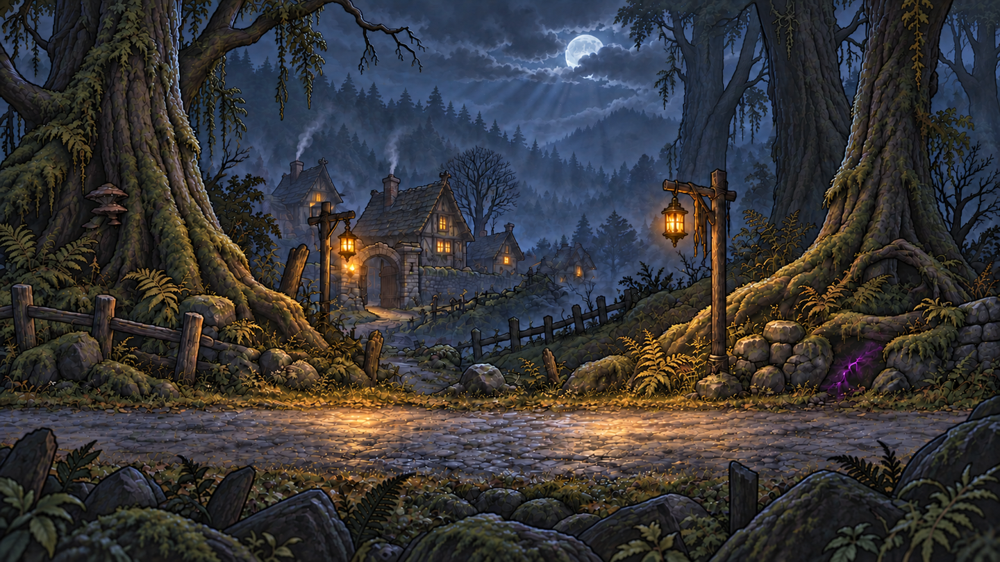
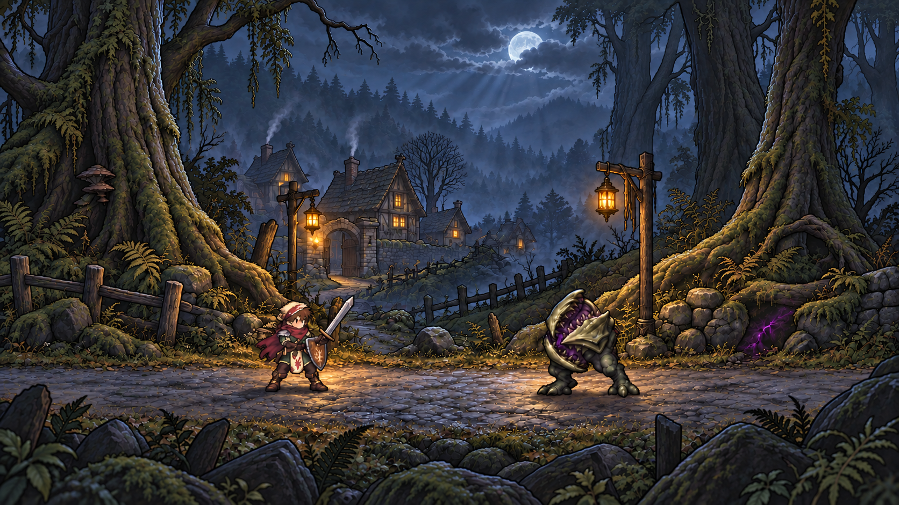

Mossy Hollow — portrait background
480 × 900 proportions. New canopy and night sky above the combat scene. Approved for Claude integration.

Landscape background

Approved composition reference

Fixed backdrop. No independent parallax layers. Actor placement needs to follow the painted road; see README.